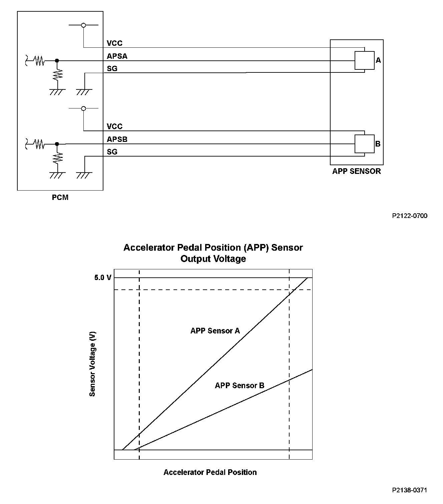
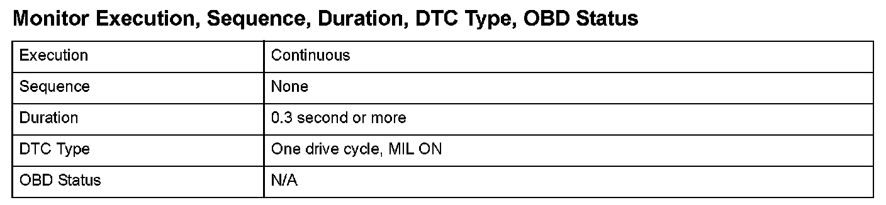
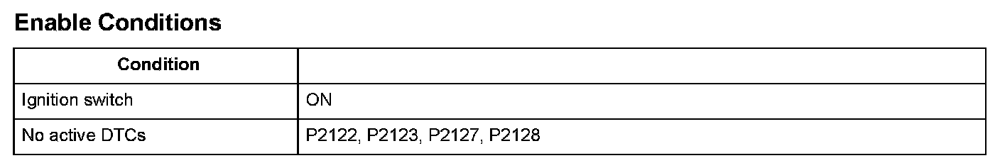

Advanced Diagnostics
DTC P2138: Accelerator Pedal Position (APP) Sensor A/B (Throttle Position (TP) Sensor D/E) Incorrect Voltage Correlation
General Description
Accelerator pedal position (APP) sensor A and accelerator pedal position (APP) sensor B are potentiometers, and they are installed in the engine compartment. These sensor output voltages differ from each other.
APP sensors A and B are operated via the throttle cable to determine the accelerator opening value when the driver presses the accelerator pedal. The accelerator pedal opening value is converted to a signal in APP sensors A and B and transmitted to the powertrain control module (PCM) to compute the target position. The target position signal is then transmitted to the throttle actuator control module.
APP sensor A is for the primary control, and APP sensor B is a back-up of APP sensor A in case it malfunctions. Both sensors compare their output voltage to each other for malfunction detection.
When the voltage difference of APP sensor B is out of a fixed range for a set time, the PCM detects a malfunction, and a DTC is stored.

Monitor Execution, Sequence, Duration, DTC Type, OBD Status

Enable Conditions
Malfunction Threshold
One of these conditions must be met for at least 0.3 second.
- If the APP sensor B voltage exceeds the range from 0 V or less to 0.361 V or more when the APP sensor A voltage is 0.361 V.
- If the APP sensor B voltage exceeds the range from 2.319 V or less to 2.681 V or more when the APP sensor A voltage is 4.995 V.
Diagnosis Details
Conditions for illuminating the MIL
When a malfunction is detected, the MIL comes on and the DTC and the freeze frame data are stored in the PCM memory.
Conditions for clearing the MIL
The MIL will be cleared if the malfunction does not recur during three consecutive trips in which the diagnostic runs.
The MIL, the DTC, and the freeze frame data can be cleared by using the scan tool Clear command or by disconnecting the battery.